双重差分(DID)
在自然实验中，个体接受处理与否似乎是随机分配的，但是我们并不能控制这种随机性，即使我们控制了那些影响随机性的变量W，处理组和控制组之间的某些效应仍然不能估计出来。
有一种方法可以消除上述问题：我们不去比较处理组和控制组之间产出水平Y的差异，而是去比较两组产出Y变化的差异，和处理前后Y变化的差异。这个估计量是处理组和控制组之间效应变化的差异，或者时间上的差异，因此，这就是我们熟知的双重差分（DID）估计量。这种方法似乎与事件研究设计类似。与事件研究设计不同的是，DID引入了永远不被处理的组群，也就是说，在数据中，我们既有处理组，也有未处理组。这似乎有点反直觉：未处理组可能与处理组存在差异。那么，我们不是引入了组群差异等额外的因素来影响识别结果吗？这样不是让事情变得更坏了吗？尽管可能会有这些问题，但是，DID的关键在于，我们现在有了未处理组，虽然增加了其它因素，我们就可以控制这些因素。
DID
估计
下面，我们来看看上海对外经贸大学的司继春博士在“知乎”上举的一个例子：（https://www.zhihu.com/question/24322044）
现在要修一条铁路，铁路是条线，所以必然会有穿过的城市和没有被穿过的城市。记\(D_i=1\)，如果铁路穿过城市i；\(D_i=0\)，如果城市i没有被穿过。现在我们感兴趣的问题是：铁路修好以后，被铁路穿过的城市是不是经济增长更快了？我们该怎么做呢？一开始的想法是，我们把\(D_i=1\)的城市的GDP加总，减去\(D_i=0\)的城市的GDP加总，然后两者一减，即\(E(Y_i\big|D_i=1)-E(Y_i\big|D_i=0)\)，这样我们就算出了两类城市GDP的平均之差。如果大家还记得，这就是我们前面所讲的理想实验中的差分估计量。
那么，这样做是不是就得到了我们感兴趣的铁路效应呢？不用说这样肯定有问题。如果没有问题，那我们讲完第一节就可以打铃下课，我收工回家了。我们想想，万一被铁路穿过的城市在建铁路之前GDP就高呢？为了解决这个问题，我们需要观察到至少两期，第一期是建铁路之前，第二期是建铁路之后。我们先把两类城市的GDP做铁路修建前后两期之差，即：
\[\begin{equation} \Delta{Y}_i=\frac{1}{N}\sum{(Y_{i,after}-Y_{i,before})} \end{equation}\]
（4）式就是第一次差分。它计算的实际是城市i建铁路前后平均GDP的增长（如果是GDP取对数，就是增长率）。接下来，我们再来计算GDP变化的平均处理效应，也就是 \[\begin{equation} ATE=E(\Delta{Y}_i\big|D_i=1)-E(\Delta{Y}_i\big|D_i=0) \end{equation}\]
这是第二次差分。这一步就把两类城市在修建铁路之前和之后的GDP增长的差异给算出来了，这就是我们要的处理效应，即修建铁路之后对城市经济的促进作用。
还可以将DID估计量换一个写法。记T=1，如果时间为建铁路之后；T=0，如果时间为建铁路之前。然后，结合上面城市修建铁路与否的虚拟变量，我们可以得到下面的表3：
| Treated | D=1 | D=0 |
|---|---|---|
| T=1 | 1 | 0 |
| T=0 | 0 | 0 |
Treated表示在某一时期，某城市是否修建了铁路。从表3可以看出，在T=0时期，没有城市修建铁路，而在T=1期，也只有D=1的城市修建了铁路。因此，\(Treated=D_i\times{T}\)。我们可以写出下列回归方程： \[\begin{equation} Y_{it}=\alpha{D}_i+\beta{T}+\gamma{D_i\times{T}}+u_{it} \end{equation}\]
其中，\(Y_{it}\)表示城市i在第t期的GDP。我们感兴趣的是系数\(\gamma\)。
首先，我们将（5）式在时间维度上做一次差分： \[\begin{equation} \Delta{Y}_i=\beta+\gamma{D}_i+\Delta{u}_i \end{equation}\]
然后，再对（6）式在个体层面做一次差分，并取期望： \[\begin{equation} E(\Delta{Y}_1-\Delta{Y}_0)=\gamma \end{equation}\]
到此，我们得到了建铁路的经济增长效应DID估计量\(\tilde{\gamma}\)。
这是怎么发生的呢？
分离出有高铁和没有高铁这两类城市的组内变动。因为我们分离出了城市变动，我们就可以通过城市组来控制其的差异，进而关闭城市因素的影响——第一次差分；
比较有高铁的城市的差异与没有高铁城市的差异。因为没有高铁城市的变动会受到时间的影响，那么，前面的差异比较就可以控制时间变动，进而通过时间来关闭那些由于时间变动产生的影响——第二次差分。
总而言之，我们想要的\(\text{估计量} = (\text{处理后的处理组 - 处理前的处理组}) - (\text{处理后的未处理组 - 处理前的未处理组})\)。这隐含意味着，未处理组的变动代表着没有发生处理时，处理组的预期变动。因此，未处理组对于DID非常关键，没有未处理组，就不能做DID。
下面，我们用模拟数据来看看DiD策略的估计量。
我们首先来看看我的家乡——武汉的高等教育。大家可能有所耳闻，英雄的城市武汉是中国的高等教育重镇，坐拥众多全球知名、全国一流的高等学府，其中全国最美的大学——武汉大学就在珞珈山下，东湖畔，在武大学习可以漫步在樱花大道，欣赏东湖和磨山的风景，聆听古编钟奏响的乐曲，经过张之洞、周恩来、张培刚等伟人和学术巨擎们的生活旧址与铜像前，时刻会想起那声振聋发聩地宣言”为中华之崛起而读书“！
21世纪之初，武汉很多高校由于扩招而在武汉郊区假设新校区。假设2004年，武汉大学在江夏区建设了新校区，我们想看看高校新区的经济（旅游）效应如何。这个时候，我们就选择一个与江夏区比较类似的武汉郊区，例如，我的故乡黄陂区（花木兰的故乡）——没有建设高校新区——来进行对照。这个时候就形成了经典的2×2DID：两个时期——建设新校区前（2003年）和后（2004年）、两个组群——江夏区和黄陂区。
我们定义两个虚拟变量，是否建设新校区NU（=1，是；=0，否），建设时间前后Period（=1，后；=0，前），这个时候，我们就可以写出经典的双向固定效应（TWFE）模型：
\[\begin{equation} y_{i t}=\beta_{0}+\beta_{1} P e r i o d_{t}+\beta_{2} N U_{i}+\beta_{4} N U_{i} \times P e r i o d_{t}+\epsilon_{i t} \end{equation}\]
其中，y表示结果变量——经济发展，β表示回归系数。
首先，我们用stata生产一套\(2\times 2\)DID的数据集。也就是数据结构为两期、两个组群的面板数据。
clear // 清除stata已存在的数据
local units = 2
local start = 1
local end = 2
local time = `end' - `start' + 1
local obsv = `units' * `time'
set obs `obsv'
egen NU = seq(), b(`time')
egen Period = seq(), f(`start') t(`end')
sort NU Period
xtset NU Period // 声明面板数据类型
lab var NU "Panel variable"
lab var Period "Time variable"第二步，定义处理变量T和结果变量y：
* 创建处理变量T和结果变量y
gen T = NU==2 & Period==2 //双等号表示恒等于，即处理发生在第二个id，第二期，这时T=1，其它所有情况T=0
gen btrue = cond(T==1, 3, 0) //cond表示当T==1为真时，btru这个变量才赋值为3，否则赋值为0
gen Y = NU + 3*Period + btrue*T //利用这个函数来生成结果变量y的数据从y的数据生成函数中，我们可以很容易的看出，在建新校区后，也就是2004年黄陂区和江夏区的结果Y的差异为4。下面，我们用图形来看看这个数据：
lab de prepost1 1 "前" 2 "后"
lab val Period prepost1
twoway ///
(connected Y Period if NU==1) ///
(connected Y Period if NU==2) ///
, ///
legend(order(1 "NU=黄陂区" 2 "NU=江夏区")) ///
xlabel(1 2, valuelabel) ylabel(4(1)11)
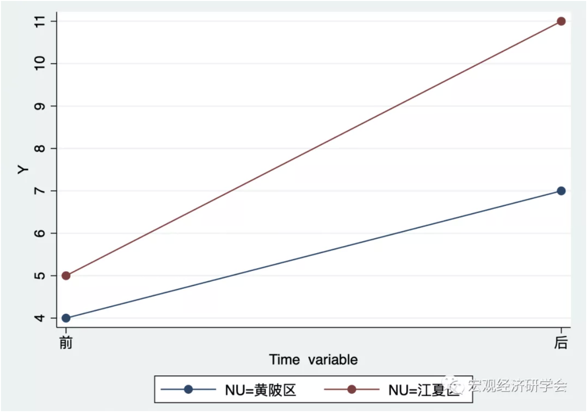
从图8.2我们可以看到，蓝色的线条（黄陂区）和红色的线条（江夏区）在新建校区后的差异为4，而在新校区建设前的差异为1。因此，建设新校区前后的净变化量应该为4-1=3，即新建校区对当地经济的影响效应为3。
下面，我们可以用面板数据回归来看看结果：
* 面板数据回归
xtreg Y T Period,fe
也可以使用另一种双向固定效应命令：
* 常用的双向固定效应命令reghdfe
* 如果没有安装这个程序包，请先安装：
* ssc install reghdfe,replace
reghdfe Y T, absorb(NU Period)
推断
大多数现实的DID应用都是多期数据，即不仅仅是两期-两组，而是多期-两(多)组，因此，我们感兴趣的变量，例如，经济增长不仅仅在江夏区和黄陂区这两个组群层面发生变化，而且也存在序列相关。Bertrand, Duflo, and Mullainathan (2004) 就指出传统标准误通常会严重低估估计量的标准偏差，因此，标准误发生下偏，即“太小”，这会使得过度拒绝原假设，显著性提高。因此，这些作者提出三种解决方案：
Block bootstrapping标准误。如果block是地区，then you simply sample states with replacement for bootstrapping. Block bootstrap is straightforward and only requires a little programming involving loops and storing the estimates. The mechanics are similar to that of randomization inference。
加总。加总法忽略时间维度。我们只需要对组群取平均，即平均为前后两期，然后在平均水平上跑DID。但是，如果处理时间有差异，这种方法就有一些不寻常，因为在进行余值分析前我们需要部分排除地区和时间固定效应。对于多个处理时期（后文还要详细的讲述），我们可以用结果变量对组群和时间固定效应以及协变量进行回归。然后获得处理组的余值。再然后将余值划分成前后两期，这个时候我们就忽略掉对照组。最后用余值对处理虚拟变量进行回归。需要注意的是，这个方法并没有揭示原始的点估计。
聚类。学者最常用的方法就是组群聚类标准误。
还有一点需要注意：当聚类数很小时，像聚类标准误这类方法可能还不够。例如，在只有一个处理组的极端情况下，5%的置信水平上的过度拒绝率可能高达80%，即使用了bootstrap技术(Cameron, Gelbach, and Miller 2008; MacKinnon and Webb 2017)。在这种情况下，建议使用随机推断方法，参见Buchmueller, DiNardo, and Valletta (2011)。
更多经典DID的例子
未处理组与平行趋势假设
既然未处理组这么重要，那么，它要具备什么特征，DID才是一个好的识别策略呢？在做DID的时候，我们需要未处理组满足一定的条件，我们称之为平行趋势假设。
平行趋势假设说的是，如果没有发生处理，那么，处理组和未处理组仍然在处理时点后保持相同的变化趋势（与处理时点前的趋势相同）。
但是，很不幸，平行趋势不可观测。它是一种反事实的情形：是假设处理没有发生的时候的情形。我们来看一个不满足平行趋势假设的例子。我们想象一下，我想看看高铁站对周围酒店餐馆的效应。例如2008年在武汉的汉口、武昌和青山都有高铁站（汉口站、武昌站和武汉站），而在武汉黄陂区则没有高铁站（黄陂区有美丽的“花木兰故乡”等旅游景点，是武汉的后花园，欢迎大家前来旅游，我可以做导游）。这个时候，我们肯定会想着用黄陂区作为未处理组。
我们来看看2007年（处理前）和2008年（处理后）的武汉汉口和黄陂，用DID来识别高铁站对地区的酒店餐馆的效应。结果发现，汉口的酒店餐馆生意更差，没有黄陂的餐馆受欢迎。What弄啥呢？这一实证结果与我们的预期结果不符呀，这怎么办，收集数据做得回归都白瞎了，我的顶刊梦岁了（欲哭无泪呀）。不要着急，不要心慌，不要放弃。我们来看看是什么原因造成了这种结果。
我们仔细分析一下我们的数据。突然发现，2008年，黄陂区突然新开了大量的酒店和餐馆（木兰特色的）。哦哦，原来上面的实证结果——汉口和黄陂2007/2008年的变动包括两个方面：汉口高铁站的新建和黄陂特色旅游酒店和餐馆的新建。这个时候就很明显了，我们不能得到结论，高铁站让汉口的酒店和餐馆经营变得更差了。上述DID估计并不是一个很好的估计量，即我们没有很好的识别出高铁站对酒店餐馆的效应。我们应该选择一个地区，在2008年并没有新建很多酒店和餐馆，假设武汉江夏区。但是，理想可能很丰满，现实却很骨感。我们可能根本就找不到一个在2007-2008没有发生任何变化的地区，因为那段时期的武汉到处都在大挖大建（我曾经在外省读书一年，然后过年回家，没找到回家的路，汉口站前面修建了一个二环高架，我家在火车站旁边五分钟，我硬是没找到回家的路，最后让我爸妈来接我了。）。如果我们选择武汉江夏来作为未处理组，我们可能发现，高铁站可能也没有使得汉口的酒店餐馆变得更好，因为太多的大学跑到江夏去建立新校区了，因此带过去了大量的大学生，因此，带动了江夏的“堕落街”兴起。因此，这个识别也不好。
记住，DID的研究设计就是利用未处理组来代表处理组中的所有非处理变动。
那么，我们可以将上述假设用下列数学表示出来：
处理组在处理前后的差异 = 处理效应 + 其他因素引起的处理组变化
未处理组在处理前后的差异 = 其他因素引起的未处理组变化
DID的效应 = 处理效应 + 其他因素引起的处理组变化 - 其他因素引起的未处理组变化
那么，对于DID来说，我们仅仅需要识别处理效应，也就是说，“其他因素引起的处理组变化”要抵消“其他因素引起的未处理组变化”。这就是平行趋势的内容。
那么，我们在做DID前，如何挑选未处理组以使得DID识别比较可信呢？我们可以做一下一些事情（并非必须，但大有益处）：
1、找不到理由说，未处理组在处理时点突然发生变化了；
2、处理组和未处理组在许多方面都是类似的；
3、处理组和未处理组的因变量在处理前有相似的变化路径。
下面，我们用图8.3来看看。
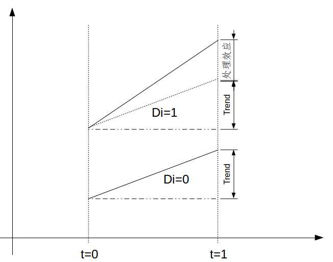
由图8.3可以清晰地看出，DID最关键的假设是common trend，也就是两个组别在不处理的情况下，Y的趋势是一样的。那么你仍会说，铁路穿过的城市可能本身GDP也高，而GDP 高的城市按照理论GDP 增长率可能更高可能更低，所以common trend的假设可能是不对的，那怎么办？如果这个问题存在，我们可以进一步假设在控制了某些外生变量之后，common trend 是对的，比如上个问题，我们可以控制城市在t=0期的GDP level。当我们控制其他变量之后，自然不能直接减两次了，我们需要用上面说的回归式子，即对下列回归方程run OLS:
\[\begin{equation} Y_{it}=\alpha{D}_i+\beta{T}+\gamma{D_i\times{T}}+X^{'}\delta+u_{it} \end{equation}\]
其中，X是控制变量向量。
既然common trend是DID最关键的假设，那么，我们如何评价非平行趋势呢？也就是，我们可以采取一些方法和方式来检查一下平行趋势假设，看看我们采用的DID识别是否可信。但是，需要特别提醒的是，这些方法和方式并不是检验平行趋势是否成立。即使”通过“了这些检验，我们也不能说平行趋势就一定成立。实际上，没有检验可以证实或者证伪平行趋势假设，因为它是反事实的，我们观测不到。这些检验方法更多是建议性的证据。如果没通过这些检验，那么，平行趋势假设可行度就很低。
此外，下面我们来看看检验平行趋势假设在实际操作中最常用的两种方法（依情况，必做）：
方法一：画时间趋势图
如果在政策干预前有多期数据，则可分别画处理组与控制组的时间趋势图（类似于上图），并直观判断这两组的时间趋势是否平行（比如，考察是否存在Ashenfelter’s dip）。如果二者大致平行，则可增强对平行趋势假定的信心。然而，即使在政策干预前两组的时间趋势相同，也无法保证二者在干预后的时间趋势也相同（后者本质上不可观测，因为时间效应已与处理效应混合在一起）。另外，如果只有两期数据，则无法使用此法。
方法二：事件研究图
方法三、安慰剂检验
在DID的安慰剂检验中，例如，2008年武汉修建了高铁站，那么，我们仅仅只用2008年以前的数据样本，忽略掉所有的2008年（处理后）的数据。然后，用2008年前的数据样本，我们挑选一些不同的时期，假设高铁站修建在这些时间。再然后，我们用假设的处理时点来估计DID。如果我们仍然发现了在假设的高铁站修建时点有显著的DID效应，那么，这就意味着可能还有一些其它的因素干扰了平行趋势假设。
也就是说，我们估计的DID效应显著不等于0（在实际处理并未发生时）可以给我们传递的信息是，处理组的非处理变化并没有完全抵消掉未处理组的非处理变化。那么，我们还需要更多的笔墨来解释为什么我们应该相信在实际处理时点，两者相互抵消了。
陈强老师于2016-10-25在微信公众号“计量经济学及stata应用”上给出更多的可操作方法：
方法四、加入更多的控制变量
从上文的讨论可知，非平行趋势可能由于遗漏变量所导致，故在回归方程中加入更多控制变量，或可缓解内生性。但此法在实践中不易实施。
方法五、假设线性时间趋势
如果假设时间趋势为线性函数，则可加入每位个体的时间趋势项：
在具体回归时，加入个体虚拟变量与时间趋势项 t = 1, 2, ... , T 的交互项即可。然而，线性时间趋势毕竟是较强的假定，不一定能成立。故此法也不完全解决问题，但可作为稳健性检验。
方法六、三重差分法
在一定条件下，可通过引入两个控制组，进行三次差分，称为“三重差分法”（difference-in-differences-in-differences，简记DDD），这样可以更好地控制时间趋势的差异，使得平行趋势假定更易成立。有关DDD的进一步介绍，参见陈强（2014，第343页）。
最后但也很重要的事（经常被忽略）：平行趋势意味着我们还要认真仔细地想想我们的因变量是如何测度和进行数据转换的。因为平行趋势并不仅仅是因果效应的假设，它也是处理组和未处理组在处理前的差异大小基本保持恒定，这就意味着我们还要考虑我们如何测度这个差异的问题。我们以对数转换为例，如果因变量\(Y\)的平行趋势成立，那么，\(ln(Y)\)就不成立，反之亦然。
这是一件显而易见的事，但是我们当中许多人从来不会去考虑这个问题。因此，我们仔细思考一下因变量满足平行趋势的形式是什么，然后我们就使用这种形式的因变量。
DID在Stata中的实现
要估计自然实验中的平均处理效应，如果直接在stata中run（9）式，那么，直接使用普通的面板数据命令\(xtreg\)即可。而DID则有专门的命令估计。厦门大学赵西亮老师的书里介绍了一种DID的命令，\(diff\)，其语法和基本选项为：
diff outcome var [if] [in] [weight], period(varname)
\underline{t}reated(varname)~[\underline{c}ov(varlist)
\underline{k}ernel~id(varname)~bw(\#)~\underline{kt}ype(kernel)~rcs~\\
\underline{qd}id(quantile)~\underline{ps}core(varname)~\underline{lo}git~\\
\underline{su}pport~\underline{add}cov(varlist)~\underline{c}luster(varname)\\
~robust~bs~\underline{r}eps(int)~test \underline{rep}ort~\underline{nos}tar~export(filename)]outcome-var是结果变量，\(\underline{p}eriod(varname)\)告诉软件时期变量，treated(varname)告诉软件处理变量。其他命令（也就是中括号里的命令）都是可选择的。参见赵西亮（2017）第177页。
操作实例： 下面，我们利用Card and Krueger（1994，AER）的数据为例，估计新泽西州最低工资调整对新泽西州快餐业就业的影响，数据为两期面板数据，主要变量有：id为快餐；t为时间，最低工资调整前为0，调整后为1；treated为分组变量，1为新泽西，0为宾夕法尼亚；fte为全职就业人数，协变量有bk、kfc、roys、wendys。如下图2所示：
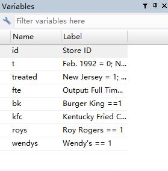
首先，安装DID命令：\(ssc~install~diff,~replace\)
然后，我们就可以在stata中输入DID命令估计回归系数。
不控制任何协变量时的结果：
diff fte, period(t) treated(treated) robust
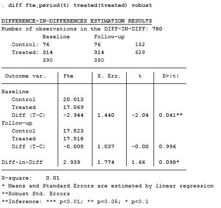
控制协变量时的结果：
diff fte, period(t) treated(treated) robust cov(bk kfc roys)
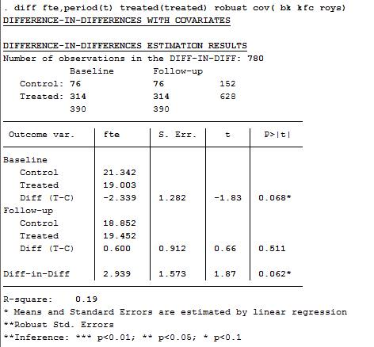
动态处理效应
在上文中，我们所讨论的DID都是两组和两期（\(2 \times 2\)），尤其是两期——处理前和处理后。但我们在现实中遇到的情形肯定不止两期，那么，DID设计可以使用吗？答案是当然，但是附带条件。（8.9）式的双向固定效应（TWFE）模型可以用于多期处理的情形：将多期划分为两个大类——前和后，然后估计单一效应——整个处理后时期的效应。
但是这样以来，我们也忽略了很多有趣的事。例如，处理效应会随着时间的推移慢慢发生变化吗？变大还是变小？处理后的时期有多长，一天，一月，一年，还是5年？肯定有人为会说，好吧，那我们为什么不把每一期的效应都估计出来呢？这个可行吗？
当然可行！
我们仅仅只需要将上述DID模型进行一点点修正就可以得到每个时期的效应。换言之，我们可以估计动态处理效应。此时，我们可以将处理前一期设置为\(t=0\)，处理前的倒数第二期设置为\(t=-1\)，实施处理的时期为\(t=1\)，处理后的第二期设置为\(t=2\)，以此类推。然后，将处理变量与每一期的时间虚拟变量进行交互，动态处理效应的DID模型就修正完毕！模型设定如下：
\[\begin{equation} Y_{i,t} = \alpha_i + \gamma_t + \sum_{m = -G}^{M} \beta_m D_{i,t-m} + \phi X_{i,t} + C_{i,t} + \epsilon_{i,t} \end{equation}\]
其中，\(\alpha_i\)表示个体固定效应，\(\gamma_t\)表示时间固定效应，\(X_{i,t}\)表示控制变量，\(C_{i,t}\)表示潜在不可观测的、与处理（政策）相关的混淆变量。\(\sum_{m = -G}^{M} \beta_m D_{i,t-m}\) 意味着处理有动态效应。t期的结果最多受到t之前的\(M \le 0\)期处理变量的影响，也最多受到t之后的\(G \le 0\)期的影响。而系数\(\{\beta_m\}_{m=-G}^{M}\)就表示这些动态效应的程度。通常，G和M的值是由我们自己确定的。
（8.10）式为我们提供了许多信息：
1、处理前的系数\(\beta_{-M},...,\beta_{-2},\beta_{-1}\)应该接近于0，或者置信水平不显著。也就是说，处理前应该不存在处理效应。这可以看做是一种安慰剂检验的形式——处理前，DID回归会发现处理效应吗？希望各位不会得到显著的处理效应！
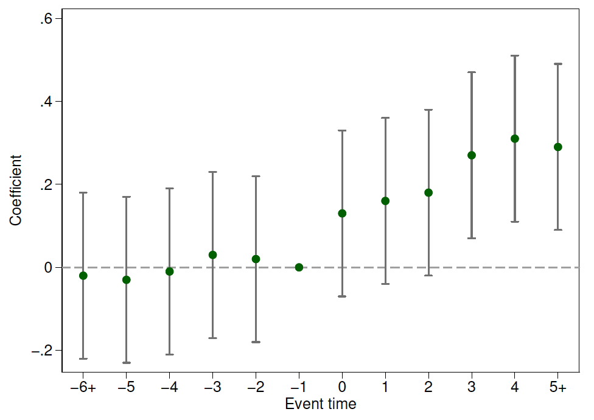
如图8.5所示，圆点表示估计系数，上下限表示置信区间，在处理前，DID估计系数都在0附近。
2、处理后的系数\(\beta_{1},\beta_{2},...,\beta_{G}\)在处理后每一期的DID估计效应。
在Stata中，我们仅仅只需要增加相应的交互项，\(i.time \#\# i.treat\)。
当我们做出了动态处理效应后，我们就可以将结果展示出来了。
此时的你还在为展示结果而发愁吗？你还在为自己的动态处理效应结果表格太多太长而苦恼吗？你还在为结果的清晰易懂而掉头发吗？你还在为没有充分展示自己刻苦跑回归而遗憾吗？
好消息！好消息！Simon Freyaldenhoven, Christian Hansen, Jorge Pérez Pérez, and Jesse M. Shapiro（2021）给出了许多可视化动态处理效应的建议，让我们清晰地、尽可能多地展示这些回归结果和有用的信息。他们建议，我们可以做两个方面的工作，再来展示动态处理效应的图。第一，展示不同时期k的累积处理效应，即k期前的所有估计系数之和\(\sum{m=-G}^{k}\beta_m\)。为了简化估计积累效应，可以采用处理变量的变化项来修正动态处理效应DID（9.7）。第二，为了可视化过度识别信息，我们可以画出政策影响时期外的累积处理效应，这个时候，我们就需要修正模型（9.7）来包含t期的处理会导致\(t-G\)前的\(L_G\)期和\(t+M\)后的\(L_M\)期结果都会发生变化。
因此，我们将（9.7）修正为：
\[\begin{equation} Y_{i,t} = \alpha_i + \gamma_t + \sum_{k= -G-L_G}^{M+L_M-1} \delta_k \Delta D_{i,t-k} + \delta_{M+L_M}D_{i,t-M-L_M} + \delta_{-G-L_G-1}(-D_{i,t+G+L_G}) + \phi X_{i,t} + C_{i,t} + \epsilon_{i,t} \end{equation}\]
其中，\(\Delta\)表示一阶差分算子。注意，（9.8）也可以应用于交叠DID的情形（下文会更详细的讲解），这个时候，\(\Delta D_{i,t-k}\)表示个体i在t期前的k期是否被处理，\((1-D_{i,t+G+L_G})\)表示个体i在t期后的\(G+L_G\)期是否被处理，\(D_{i,t-M-L_M}\)表示个体i在t期前的至少\(M+L_M\)是否被处理。
参数\(\{\delta\}_{k=-G-L_G-1}^{k=M+L_M}\)可以理解成不同时期的累积处理效应。尤其是，结合（9.7）意味着
\[\begin{equation} \delta_k = \begin{cases} 0 & \text{当} k< -G \\ \sum_{m=-G}^{k}\beta_m &\text{当}-G \le k \le M \\ \sum_{m=-G}^{M}\beta_m & \text{当} k \ge M \end{cases} \end{equation}\]
我们在展示动态处理效应图时，其核心就是画出\(\{k,\dot{\delta}_k\}_{k=-G-L_G-1}^{k=M+L_M}\)的散点图。Simon Freyaldenhoven, Christian Hansen, Jorge Pérez Pérez, and Jesse M. Shapiro（2021）给出了实践操作中展示处理效应图的7点建议：
1、当估计（9.8）时，标准化\(\delta_{-G-1}=0\)。
图9.6 展示了标准化\(\delta_{-1}=0\)的动态效应图。两张图有类似的处理前趋势。在处理时间-1后，图9.6（a）仍然显示平滑的处理前趋势，而9.6(b)则显示了“跳跃”。且图中包含了95%的置信区间。我们标准化\(\delta_{-1}=0\)就可以很容易的使用置信区间来检验点假设——处理-时间趋势在时期-1和k处相同（\(\delta_{-1}=\delta_k\)）。例如，设定k=0，读者就能很容易地从图9.6(b)中得到结论：处理时间0处的结果发生了显著地变化。而从9.6(a)可以看出，处理时点0处的结果并没有发生显著地变化。
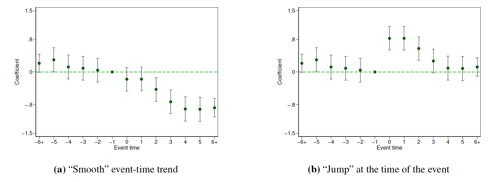
图片来源于：Simon Freyaldenhoven, Christian Hansen, Jorge Pérez Pérez, and Jesse M. Shapiro（2021，NBER, w29170）
2、在图中加入系数\(\delta_{k^\star}\)的标签，其值放入一个括号中，且值为：
\[\begin{equation} \frac{\sum_{(i,t):\Delta D_{i,t+k^\star} \neq 0}Y_{i,t}}{|(i,t):\Delta D_{i,t+k^\star} \neq 0|} \end{equation}\]
图9.7展示了建议2的括号标签——y轴0点处。这个标签可以很容易地让读者理解估计的积累政策效应的大小。例如，图9.7(a)中系数估计量\(\hat{\delta}_3\)意味着第3期（相对于处理时间-1期）的政策对结果的积累效应大约为-0.73，这个效应比较适中（相对于括号标签41.94——政策变化前一期的因变量样本均值）。
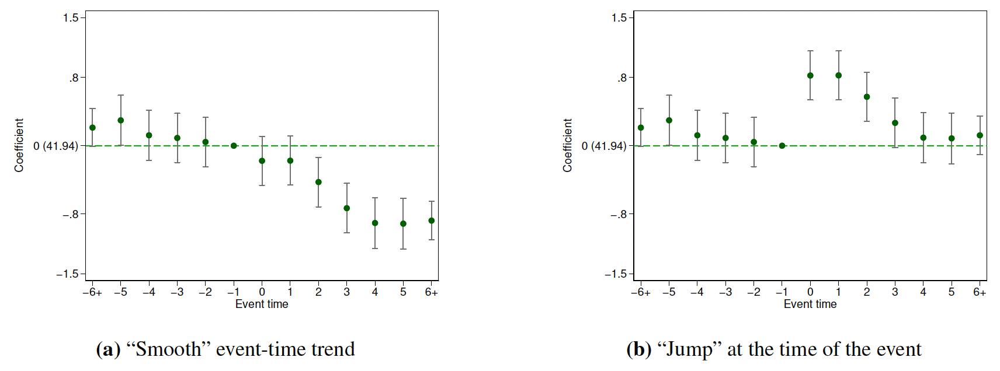
图片来源于：Simon Freyaldenhoven, Christian Hansen, Jorge Pérez Pérez, and Jesse M. Shapiro（2021，NBER, w29170）
3、除了为处理时间路径的单个要素画出点置信区间外，还要为结果\(\delta\)的处理时间路径画一条双向sup-t置信带宽。
图9.8呈现了建议3的增加双向置信带宽，即在点置信区间外的线条。任何落入点置信区间外的处理时间路径的值都可以理解成统计上与对应估计量不一致，任何没有完全通过置信带宽的处理时间路径都可以理解成统计上与估计路径不一致。例如，在9.8的两张图中，用双向置信带宽，我们不能拒绝所有处理前的处理时间路径等于0。但用点置信区间，我们可以得到结论\(\hat{\delta}_{-5}\)是统计显著的。除非我们已经预先设定我们只对原假设——\(\delta_{-5}=0\)——感兴趣，否则，基于双向置信带宽的结论似乎更合理一些。
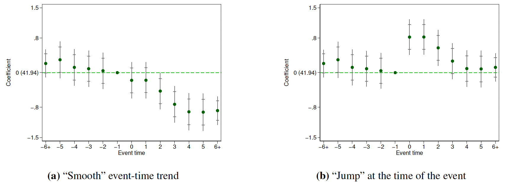
图片来源于：Simon Freyaldenhoven, Christian Hansen, Jorge Pérez Pérez, and Jesse M. Shapiro（2021，NBER, w29170）
4、在图中包含下列假设的Wald检验p值：
\[\begin{array}{lrl} H_{0}: \delta_{k}=0, & -\left(G+L_{G}+1\right) & \leq k<-G (\text{no pre-trends})\\ H_{0}: \delta_{M}=\delta_{M+k}, & 0 & <k \leq L_{M} (\text{dynamics level off}) \end{array}\]
图9.9展示了增加两个p值，给定\(L_G=0\)和\(L_M=1\)两张图都没有拒绝待检验假设。建议4中的待检验假设的精确声明都有赖于\(L_G\)和\(L_M\)的选择。即它们控制着（9.7）式施加给（9.8）式过度识别约束的数量。实践中，对于\(L_G\)和\(L_M\)的选择采用经验规则（参考经典文献的选择）。
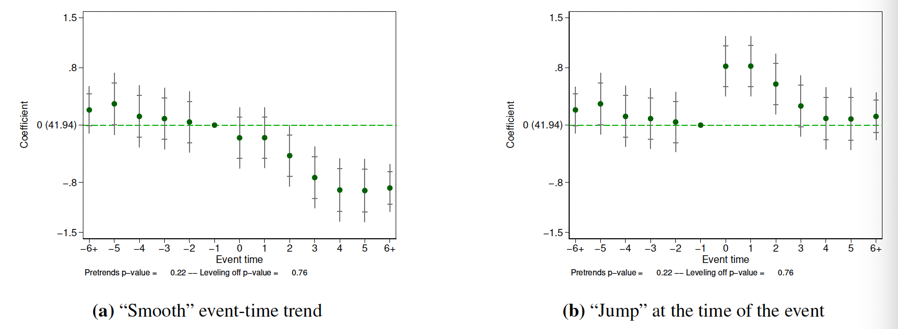
图片来源于：Simon Freyaldenhoven, Christian Hansen, Jorge Pérez Pérez, and Jesse M. Shapiro（2021，NBER, w29170）
5、设定\(L_M=1\)和\(L_G=M+G\)
设定\(L_M=1\)可保证检验我们的假设：过去超过M期的政策变量变化并不会改变结果。而设定\(L_G=M+G\)则可以使事件图“对称”，从这个意义上来说，可以检验政策可能影响结果的期限内的处理前趋势。例如，图9.9设定了M=5，G=0。
6、Plot the least “wiggly” confound whose path is contained in the Wald region \(CR(\delta)\) for the event-time path of the outcome. Specifically, plot \(\delta*(v*)\), where
\[\begin{equation} \begin{aligned} p^{*} &=\min \left\{\operatorname{dim}(v): \delta^{*}(v) \in C R(\delta)\right\} \text { and } \\ v^{*} &=\arg \min _{v}\left\{v_{p^{*}}^{2}: \operatorname{dim}(v)=p^{*}, \delta^{*}(v) \in C R(\delta)\right\} \end{aligned} \end{equation}\]
Figure 9.10 illustrates Suggestion 6 by adding the path \(\delta*(v*)\) to the plot in Figure 9.9. In Figure 9.10(a), the estimated event-time path is consistent with a confound that follows a very “smooth” path, close to linear in event time, that begins pre-event and simply continues post-event. We suspect that in many economic settings such confound dynamics would be considered plausible, thus suggesting that a confound can plausibly explain the entire event-time path of the outcome, and therefore that the policy might plausibly have no effect on the outcome. In Figure 9.10(b), by contrast, the estimated event-time path demands a confound with a very “wiggly” path. We suspect that in many economic settings such confound dynamics would not be considered plausible, thus suggesting that a confound cannot plausibly explain the entire event-time path of the outcome, and therefore that the policy does affect the outcome.
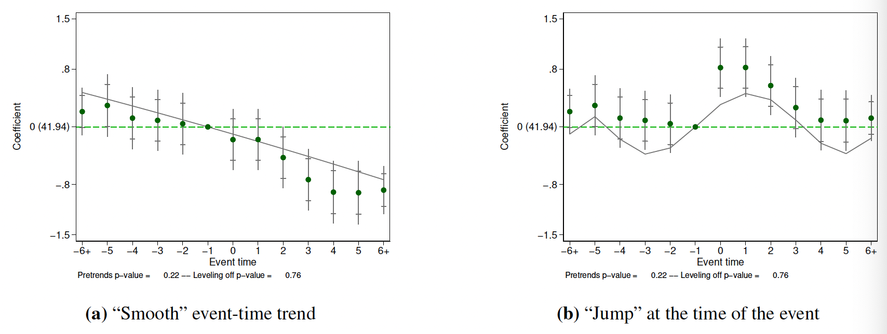
图片来源于：Simon Freyaldenhoven, Christian Hansen, Jorge Pérez Pérez, and Jesse M. Shapiro（2021，NBER, w29170）
7、如果用一个比（9.7）式更多限制的回归模型来概述效应大小，我们就应该可视化下列限制：
1、在预期限制下估计（9.7）；
2、用（9.9）式将（9.7）式估计量转换成积累效应；
3、将估计的累积效应画在事件研究图上。
Figure 9.11 illustrates this suggestion in a hypothetical example in which the more restrictive model assumes that the policy effect is static, i.e., that the current value of the policy affects only the current value of the outcome. Comparison of the two event-time paths provides a visualization of the fit of the more restrictive model. The uniform confidence bands permit ready visual assessment of more restrictive models. In the case shown in Figure 9.11, the more restrictive model is not included in the uniform confidence band, implying that we can reject the hypothesis that the effect of the policy is static. Figure 9.11 also displays the p-value from a Wald test of the more restrictive model, which also implies that the more restrictive model is rejected. The Wald test may be more powerful for testing this joint hypothesis than the test based on the sup-t bands, but its implications are harder to visualize in this setting (Olea and Plagborg-Møller 2019).
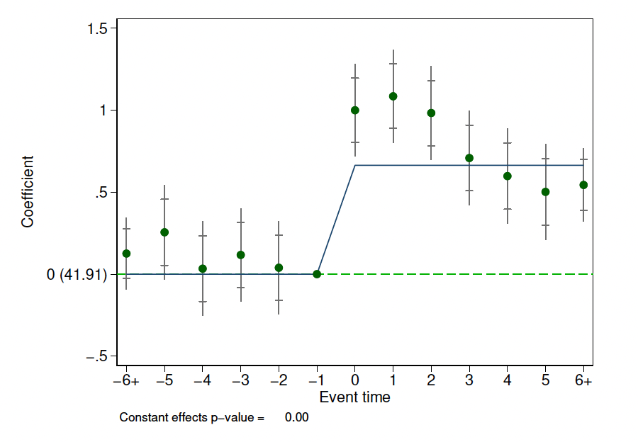
图片来源于：Simon Freyaldenhoven, Christian Hansen, Jorge Pérez Pérez, and Jesse M. Shapiro（2021，NBER, w29170）
Simon Freyaldenhoven, Christian Hansen, Jorge Pérez Pérez, and Jesse M. Shapiro（2021，NBER, w29170）开发的stata命令包——xtevent来实现上述建议。
* 首先，找到xtevent命令包
findit xtevent
* 或者直接安装命令包
ssc install xtevent, replace
交叠DID
迄今为止，我们讨论的处理期都是同一时点，也就是说，对于所有的个体来说，都在同一期发生处理。但是，现实社会中，很多事件发生在不同的时点，也就是说，不同个体受到处理的时间可能不同。这个时候，我们还可以按照上面的双向固定效应（TWFE）估计量那样来理解DID估计系数吗？明确的答案：肯定不行！
异质性处理时点下TWFE模型的问题
例如，我们想研究一下武汉的大学在郊区建新校区对当地经济的影响。我们可能知道，武汉的很多大学在21世纪初（例如2003年）都在武汉江夏区建设新校区，而在2010年在武汉黄陂区建设新校区。江夏区和黄陂区都有建设大学的前后时期，但是它们的“建设”时间不同。那么，研究大学新校区对当地经济社会的影响效应有什么问题吗？
从研究设计的角度来看，没有任何问题，我们只需要把每个2*2的组群-时间放在一起即可。但是，Goodman-Bacon(2020)指出，从统计的角度看，异质性处理时点会使得双向固定效应（TWFE）回归不再有效。甚至在一些情形下，本来大学新校区会促进当地经济社会发展，但是，我们用TWFE来估计DID估计量会得到负向效应。
之所以会产生这样的后果，原因非常的复杂，我们在这里并不去回顾这些复杂的数学推导，如有兴趣，可以参考Baker（2019）：“Difference-in-Differences Methodology”、Callaway and Sant’Anna（2020）：“Introduction to DiD with Multiple Time Periods”。总而言之，多期异质性处理时点的TWFE会将已经处理的组群作为控制组，这就会使得处理前的平行趋势不再满足。（1）如果效应本身就具有动态性，或者处理效应在组群间变动，那么，我们设定的回归不满足平行趋势。（2）如果处理效应会随着时间而增强，那么，“处理的控制组”会具有向上变动的趋势，而“刚刚受到处理”的组群则没有这个趋势，因此，平行趋势不成立，识别失败。正如Sun and Abraham (2020)指出：不同时期的效应会彼此交叠和影响。这也是被称为“交叠DID”的原因。
2018以来，关于交叠DID的双向固定效应的问题及其稳健估计量的论文呈现出了爆炸性的增长，如表9.2和9.3所示（更多关于DID的进展信息，参见Asjad Naqvi的DID主页）。这么多的论文确实把我们”炸伤“了，要跟踪这些论文，并充分学习、理解它们之间的差异，有时候真的比走蜀道还难。要知道，人们都习惯于“吃老本”，因为我们前期已经在这些老本上花了大量的时间和精力，而且对于“发论文”来说似乎也够用，因此，学习新的知识花的时间和精力成本太大，而且边际收益也是递减的。但是，做真正的研究和教学来说，学习这些最新的进展肯定是必须的，因为学生们需要老师去指引。
下面，我们就带大家来学习一下交叠DID估计。我们忽略那些“艰涩难懂”的数学与统计细节，更多关注于这些最新的稳健DID估计量的直观含义与Stata操作。
| Stata包 | 安装 | 参考文献 | |||||||||||||||||||
|---|---|---|---|---|---|---|---|---|---|---|---|---|---|---|---|---|---|---|---|---|---|
| bacondecomp |
|
|
|||||||||||||||||||
| eventstudyinteract | ssc install eventstudyinteract, replace |
|
|||||||||||||||||||
| did_multiplegt | ssc install did_multiplegt, replace |
|
|||||||||||||||||||
| did_imputation | ssc install did_imputation, replace |
|
|||||||||||||||||||
| drdid | ssc install drdid, replace |
|
| Stata包 | 安装 | 参考文献 | |||||||||||
|---|---|---|---|---|---|---|---|---|---|---|---|---|---|
| csdid | ssc install csdid, replace |
|
|||||||||||
| flexpaneldid | ssc install flexpaneldid, replace |
|
|||||||||||
| xtevent | ssc install xtevent, replace |
|
|||||||||||
| did2s | ssc install did2s, replace |
|
|||||||||||
| stackedev | github install joshbleiberg/stackedev |
|
|||||||||||
| eventdd | ssc install eventdd, replace |
|
|||||||||||
| staggered_stata | github install jonathandroth/staggered_stata |
|
Goodman-Bacon（2020）指出，TWFE估计量实际上是所有可能的\(2 \times 2\)DID估计量的加权平均。其权重与组群规模和每一对\(2 \times 2\)处理指标的方差成一定比例——面板数据中间处理的单元有最高的权重。他还推导了，有 一些\(2 \times 2\)DID估计量用特定时点处理的组群作为处理组，而从未处理的组群作为控制组，另一些\(2 \times 2\)DID估计量则用两个不同时点处理的组群——处理开始前，后一次处理的组群作为控制组，而处理开始后，前一次处理的组群作为控制组。因此，当处理效应不随时间变化时，\(2 \times 2\)DID估计量就是组间处理效应（以方差为权重）加权平均，且所有权重都为正。但是，当处理效应随时间变化时，有一些\(2 \times 2\)DID估计量就会出现负的权重。这是因为已经处理的组群被当作了控制组，其随时间变化的处理效应的比重会发生变化，但TWFE-DID估计量忽略了这一点。
下面，我们还是来思考一下武汉的大学去郊区建设新校区对当地经济社会发展产生的效应：江夏区从2003年开始建设新校区，黄陂区从2010年开始建设新校区。假设我们有1998-2019年武汉两个郊区经济社会发展数据。这个数据集允许我们比较两个不同的DID：
第一，我们关注于1998-2010年，如图9.12左图所示。在这一段时期，黄陂区从未建设大学新校区，而江夏区在2003年“被处理”了，因此，我们可以将黄陂区作为对照组，将江夏区作为处理组来估计大学新校区对经济社会发展的影响。
第二，我们也可以关注2003-2019年，如图9.12右图所示。这一时期，江夏新建大学校区的状态并为发生变化，而黄陂区咋2010年有了新校区。因此，可以将江夏作为对照组，黄陂区作为处理组来估计大学新校区对经济社会发展的响应。
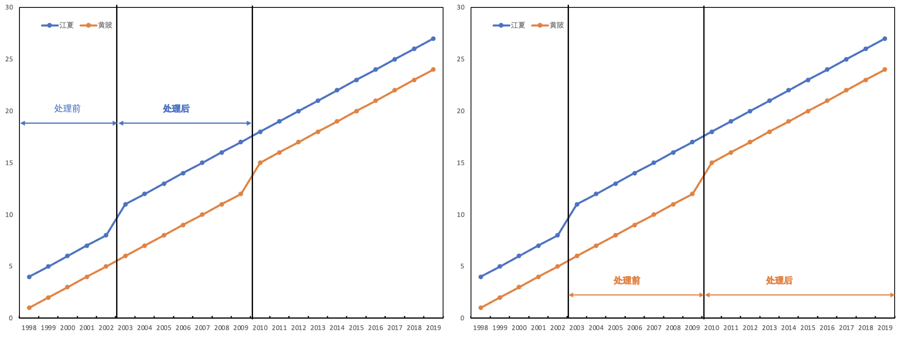
Goodman-Bacon(2020)显示，所有交叠DID的TWFE估计量都可以按照图9.12的方式进行分解：（1）先处理的组群（江夏）与后处理的组群（黄陂）在处理前时期的差分；（2）先处理的组群（江夏）在处理后时期与后处理组群（黄陂）的差分；（3）不同处理时点的组群与从未处理组群（如果存在）的差分。因此，他提出用三种差分的加权平均来作为交叠DID估计量。因此，TWFE的DID估计量只有在不随时间变化的同质处理效应情形下才适用，而在交叠处理时点情形，还采用其它方法。
据此，更加突出，在做DID之前一定要检验面板数据的平行趋势是否成立。当遇到交叠处理时点时，我们要修正画平行趋势图的方法——重新寻找中心处理点，并堆叠所有可能的\(2 \times 2\)DID。关键点在于识别同时依赖于处理前后的共同趋势。由于我们要重新加权平均这\(2 \times 2\)DID估计量，因此，有一些组群不满足共同趋势假设的情况比另一些组群要更严重。好吧！优陷入死胡同了？没有！Goodman-Bacon（2020）也提出了一个检验——方差加权的共同趋势——来评价所有观测到的偏离的严重程度：分解并画出\(2 \times 2\)DID估计量的变动。Stata命令包为bacondecomp：
* 安装bacon分解包
ssc install bacondecomp, replace
* 加载Stevenson and Wolfers' (2006)关于无过错离婚改革对女性自杀效应的数据
use http://pped.org/bacon_example.dta
* 声明面板数据
xtset stfips year
* 估计双向固定效应TWFE
xtreg asmrs post pcinc asmrh cases i.year, fe robust
* Goodman-Bacon (2020)的DID分解应用于上述TWFE模型
bacondecomp asmrs post pcinc asmrh cases, stub(Bacon_) robust
* 显示详细的分解信息
bacondecomp asmrs post pcinc asmrh cases, ddetail
下面，我们用来自于bacondecomp包的案例和数据来说明一下Goodman-Bacon(2020)的DID分解：Stevenson and Wolfers’ (2006)研究了无过错离婚改革对女性自杀的影响。图9.13展示了Goodman-Bacon分解的结果。红色的水平线表示DID估计量（-3.08）——y轴值乘以x轴的权重。三角点表示一个时变的组群作为处理组，1964年改革前的组群作为对照组。叉叉点表示一个时变处理的组群作为处理组，非改革组群作为对照组。
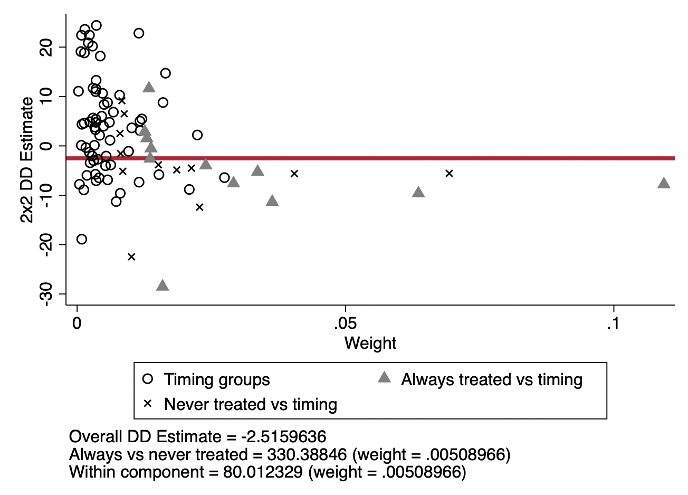
事件研究与Bacon分解
Goodman-Bacon(2020)建议在异质性处理时点情形下，使用事件研究设计。下面，我们跟随Cheng and Hoekstra(2013)来看看事件研究和Bacon分解的用法。他们评估了美国枪支改革对暴力的影响。2012年2月26日，在美国佛罗里达的斯坦福，乔治.齐默尔曼开枪杀死了年仅17岁的非裔美国人本杰明.马丁。马丁从便利店回家，齐默尔曼尾随了很长一段路，并向警察报警说马丁行为很诡异，警察劝齐默尔曼离开。但齐默尔曼并未听警察的劝告，并在跟踪马丁的过程中激怒了马丁，两个人起了激烈的冲突。最终，齐默尔曼开枪杀死了马丁。齐默尔曼认为自己是正当防卫，并提出无罪辩护。陪审团也释放了他。
陪审团认为齐默尔曼的行为是合法的，因为在2005年，佛罗里达改革规定了致命性正当防卫的使用情形。以前，致命性正当防卫只在家里使用才是合法的，但一部新的法律SYG将上述情形扩展到了公共区域。在2000-2010年间，美国21个州进行了类似的致命性正当防卫的范围。这些改革之后，只要人们感觉到危险，他们都可以使用致命性正当防卫来进行反击。甚至在一些州，只要人们感觉害怕就可以使用暴力回击。因此，检察官要起诉，就要证明“害怕”的感觉不合理，这几乎是不可能证明的。
从经济学的视角来看，这些改革降低了开枪杀人的成本。人们能用致命性正当防卫来仅仅只是让自己害怕的感觉消失。因此，我们可以预期到对于可能的受害人来说，致命性暴力行为会增加。换言之，美国的枪支改革会导致故意暴力犯罪的上升。对于美国人来说，这是一场悲剧，但是官方统计数据并没有显示暴力犯罪的增加。Cheng and Hoekstra(2013)用DID研究设计来估计枪支改革对暴力犯罪的效应，致命性正当防卫使用条件的变化是处理变量，不同的州在不同的时点进行了这项改革。回归方程为：
\[\begin{equation} Y_{i,t} = \alpha +\delta D_{i,t} +\gamma X_{i,t} +\sigma_{i} +\tau_t +\epsilon_{i,t} \end{equation}\]
其中，\(D_{i,t}\)是处理变量，通常来说，它要么是0，要么是1。但是Cheng and Hoekstra(2013)让D是0-1之间的数，因为有一些州在年中实施了改革。因此，如果改革在7月实施，那么，在实施年之前的时期，D为0，在实施年，D为0.5，在实施年之后的时期，D为1。为了讨论事件研究和Bacon分解，我们还是使用传统的虚拟变量设定，即D要么为0，要么为1。
该例子的数据和stata代码来源于Scott Cunningham(2021):"Cause Inference: The Mixtape"第9章。
* 加载数据
use /Users/xuwenli/OneDrive/DSGE建模及软件编程/教学大纲与讲稿/应用计量经济学讲稿/应用计量经济学讲稿与code/data/mixtape/castle.dta, replace
* 设立默认使用的图形，名称为cleanplots
set scheme cleanplots
* 安装bacondecomp包
* 定义全局宏名称
global crime1 jhcitizen_c jhpolice_c murder homicide robbery assault burglary larceny motor robbery_gun_r
global demo blackm_15_24 whitem_15_24 blackm_25_44 whitem_25_44 //人口特征
global lintrend trend_1-trend_51 //州线性趋势
global region r20001-r20104 //区域-季度固定效应
global exocrime l_larceny l_motor // 外生犯罪率
global spending l_exp_subsidy l_exp_pubwelfare
global xvar l_police unemployrt poverty l_income l_prisoner l_lagprisoner $demo $spending
* 用改革是否生效的虚拟变量，cdl
xi: xtreg l_homicide i.year $region $xvar $lintrend cdl [aweight=popwt], fe vce(cluster sid)
* 设定变量post的标签
label variable post "Year of treatment"
* 用处理年份的虚拟变量，post
xi: xtreg l_homicide i.year $region $xvar $lintrend post [aweight=popwt], fe vce(cluster sid)
结果如表9.6第二列所示，我们可以看到，枪支改革（致命性防卫法案是否生效）会导致杀人犯罪升高10%，且在5%的水平下显著。当我们使用处理时间虚拟变量post时，改革效应为7.7%，在5%的水平下显著。
下面，我们来看看事件研究回归。首先，我们定义处理前的时期leads和处理后的时期lags。用“time_til”变量来表示地区受到处理的时期和之后的时期。用这个变量可以创建leads变量（处理前的时期数）和lags变量（处理后的时期数）。
Stata命令为：
* 事件研究回归的处理年(lag0)作为忽略的类别
xi: xtreg l_homicide i.year $region lead9 lead8 lead7 lead6 lead5 lead4 lead3 lead2 lead1 lag1-lag5 [aweight=popwt], fe vce(cluster sid)
结果展示在表9.6的第三列。由于忽略了处理年lag0，因此，其系数也忽略。我们可以从结果看出，处理前的所有时期系数均不显著，除了leads8和leads9，这可能是因为处理前8年只有3个州，处理前9年只有1个州。处理前1-6年的估计系数接近0，但统计上不显著。另一方面，处理后的时期估计系数均为正，且均在10%的水平下显著。
下面，我们画出事件研究的结果。首先，我们安装一个stata程序包coefplot，也可以使用另一个程序包xtevent。
* 安装画图程序包coefplot
ssc install coefplot
* 用coefplot来画出事件研究系数
coefplot, keep(lead9 lead8 lead7 lead6 lead5 lead4 lead3 lead2 lead1 lag1 lag2 lag3 lag4 lag5) xlabel(, angle(vertical)) yline(0) xline(9.5) vertical msymbol(D) mfcolor(white) ciopts(lwidth(*3) lcolor(*.6)) mlabel format(%9.3f) mlabposition(12) mlabgap(*2) title(Log Murder Rate)
从图9.14的事件研究图中可以清晰地看出，处理前的8-9年，改革的州杀人率的水平显著的低，但是这两年改革州的数量非常少，所以我们可以忽略这个负向效应，因为如此少的样本会得到过高的拒绝率（MacKinnon and Webb，2017）。的确，将注意力转移至处理前6年，改革州和控制组并没有差异。但是改革后，杀人率对数上升了，这与表9.6的post虚拟变量得到的结果一致，而且处理后的估计效应几乎恒定。
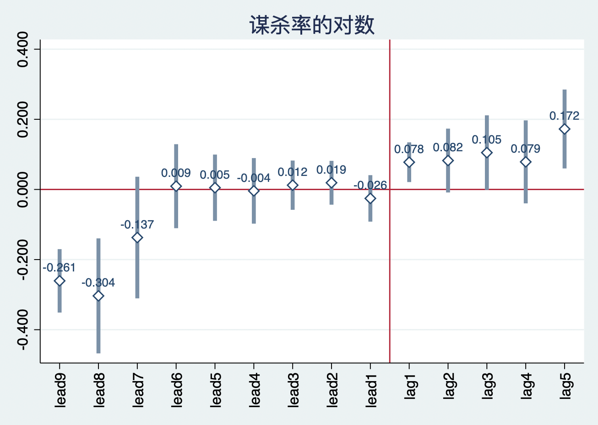
我们知道交叠DID设计中的TWFE估计量存在将已处理的组群作为对照组。下面，我们用Goodman-Bacon分解来看看这个问题发生的频率。Bacon分解用二值处理变量，所以还是使用post虚拟变量来跑回归。下面演示的bacon分解没有协变量（注意：Bacon分解是可以带协变量的）。此外，我们使用stata，还要从Thomas Goldring的主页下载ddtiming。
* 定义全局宏变量
global law cdl
* Bacon分解
* 加载ddtiming
net install ddtiming, from(https://tgoldring.com/code/)
areg l_homicide post i.year, a(sid) robust
ddtiming l_homicide post, i(sid) t(year)
美国枪支改革效应的DID估计量和Bacon分解如表9.7所示。我们将权重乘以对应的DID估计量，然后加权平均：
\[(0.077 \times (-0.029)) + (0.024 \times 0.046) + (0.899 \times 0.078) = 0.069\]
由此可以看出，双向固定效应的DID估计量确实是所有可能的\(2 \times 2\)DID估计量的加权平均。而且，我们从Bacon分解可以清晰地看出，TWFE的DID估计量大部分来自于处理组与从未处理的对照组的差分估计量（估计效应为0.078，权重为0.899）。不同处理时点的处理组与对照组的差分估计量对最后的结果权重非常小，但确实会产生影响。
下面，我们来看Bacon分解的权重图，如图9.15所示。图中每一个点都代表一个\(2 \times 2\)DID配对。横轴表示权重，纵轴表示\(2 \times 2\)DID估计量。红色线条表示最终的TWFE的DID估计量。
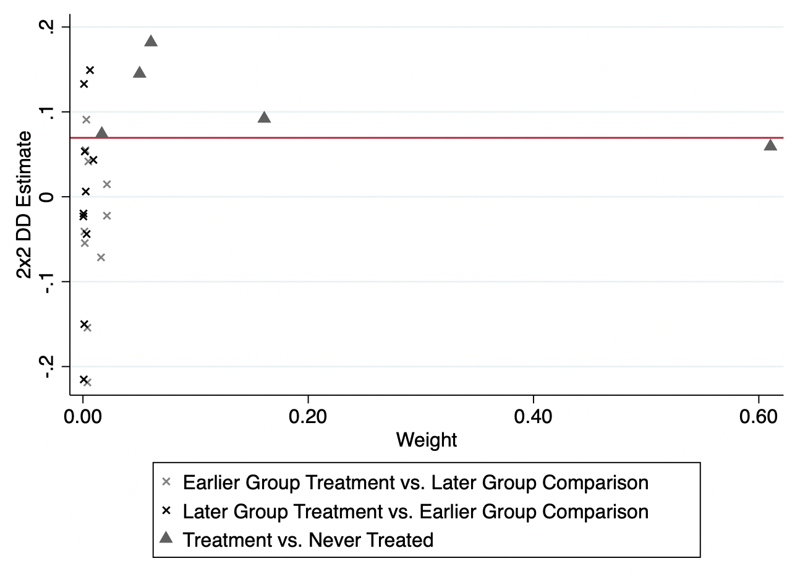
其它交叠DID估计量
正如上文所述，2018年后，为了修正异质性处理时点的TWFE估计量的问题，许多学者都提出了一定程度的修正估计量，有一些文献已经在2020年JoE上发表，更多的文献也可以参见【DID最新进展和DID最新文献合集】。所有稳健DiD 估计量都专注于通过避免使用已处理的个体作为对照组，来估计处理组的处理效应。然而，要避免使用已处理组作为对照组，就需要引入样本选择，因此，我们必须要解释它。交叠DID估计的作者们分别采用不同的策略来实现这一点，其中大多数策略涉及通过基于估计子样本的 ATT 来加权得到整体 ATT，例如，组群-时间 ATT 或估计组群处理效应本身。Scott Cunningham（2021）将这些稳健DID估计量分为以下类别：
加权组群-时间的ATT
通过相对事件时间的平衡来堆叠
插补(imputation)方法
Callaway and Sant’Anna (2020)就是采用的加权组群-时间的ATT。Callaway and Sant’Anna (2020)所做的事情就是，估计我们的样本数据中所有“好”的\(2 \times 2\)DID组群-时间配对。这个过程非常的耗费时间，因为\(2 \times 2\)DID的数量会随着组群数量和时期数量递增。例如，我们的样本数据有5个组群（不同时间接受处理）和10个时期，那么，我们用CS（2020）方法就要估计50个不同的ATTs。只要我们获得所有单个ATT估计量，我们就可以根据组群，时期，事件类型等等来平均这些ATT以获得最终的交叠DID估计量。此外，Sun and Abraham (2020) 估计量与CS类似，这两个估计量是彼此的嵌套的。这个加权平均的过程使它们“感觉”更有可能是“正确”的方法。而且已经有Stata包可以得到这类估计量，见表9.2和9.3。
但是，使用从不或尚未处理的组群作为对照组来加权 ATT 并不是解决交叠处理的唯一方法。例如，堆叠（Stacking ）也是可行的替代方案。堆叠是通过将数据集重组为相对事件时间，而不是日历时间，将时序差分问题重新转换为两个组群的研究设计，从而解决了该问题。这样做是因为两组设计实际上不会遇到交叠处理TWFE 的问题。一旦数据被重建为相对事件时间的平衡面板，其中处理以相同的“相对处理日期”为中心，然后可以估计传统的 TWFE 模型——控制组群和时间固定效应，以得到处理效应的加权平均值。因此，与堆叠法最相关的文章是Cengiz et al.（2019）。当然，还有其它文献。
第三种方法是一种估算方法，它在一个多步骤过程中估计缺失的反事实，该过程利用平行趋势假设估计未处理组群中的动态效应。这方面的文献是Borusyak、Jaravel and Spiess（2021 ）及其插补估计量。尽管在很多方面，Athey et al.（2021）关于使用面板数据完成矩阵的文章也是用了类似的方法，但在技术上，他们不是 DID 估计量，而是合成控制估计量。
此外，今年的一篇NBER工作论文中，Gardner （2021）提出了一个两阶段DID估计量，它应该介于上述三类方法之间。从技术上讲，Gardner 确实从一个相同的加权组群时间 ATT 的目标参数开始，将其与 Callaway and Sant’Anna (2020) 等放在一起。但它不会使用双重稳健方法或逆概率权重来估计整体 ATT。相反，正如他所说的那样，两阶段DID (2sDiD) 最终将是我们最熟悉的双向固定效应 (TWFE) 回归的解决方案的一种扩展，如堆叠。但它也是一个多步骤过程，仅使用控制组来估计拟合值，这使它与 Borusyak、Jaravel and Spiess（2021）的插补方法比较类似。
Borusyak、Jaravel and Spiess（2021 ）和Gardner （2021）都采用多步骤来规避“已处理”组群进入控制组的的问题。即：
第一步，用还未处理的观测样本来识别潜在结果（假设没有发生处理效应）： \[y_{i,t} = \alpha_i +\alpha_t +e_{i,t}\]
第二步，得到个体水平的处理（处理结果下的观测值与未处理结果下的预测值之间的差分）： \[y_{i,t} = \hat{\alpha}_i - \hat{\alpha}_t = ATT_{i,t}\]
第二步要求加总，我们可以按照感兴趣的一些组群来平均所有的\(ATT_{i,t}\)。此外，Gardner(2021)用GMM来估计该模型，而BJS(2021)用了其它方法来得到矫正的标准误。
表9.2和9.3也列示了除Bacon分解外的其它11种用Stata估计的交叠DID程序包。为了更好地教学演示，在本讲稿伴随的stata dofile中，我修正了Pietro Santoleri在github上分享的可以估计7种不同交叠DID 估计量（包括OLS估计量）的dofile。也就是说，我扩展了Kirill Borusyak、David Burgherr和Pietro Santoleri的dofile，用模拟数据集来估计表9.2和9.3中的11种估计量，并画出事件研究估计系数图。
本讲稿伴随的交叠DID估计量Dofile文件夹可以从我的个人主页上下载。从github上下载整个文件夹，打开文件夹中的Stata项目“staggered.stpr”，在stata的项目管理器中可以看到下列两个文件，如图9.16所示：
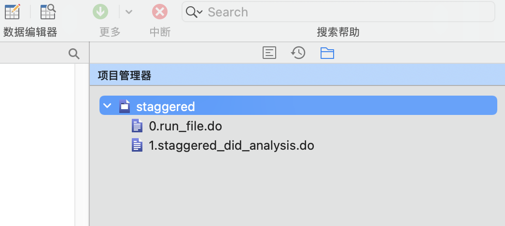
0.run_file.do：设定运行环境，调用scripts/1.staggered_did_analysis.do来计算估计量。我们不需要调整dofile中的路径，也不用下载表9.2和9.3中的交叠DID程序包，因为这些程序包已经下载、包含在stata_packages子文件夹中。我们只需要运行scripts/0.run_file.do来获得所有估计量。
1.staggered_did_analysis.do：包含11种交叠DID估计量，并画出两张事件研究图——不同时间期限的图，储存在output子文件夹中。
如果大家希望保持所有交叠DID估计量的程序包是最新版本，可以将scripts/0.run_file.do中的global download后的数值从0改为1。这样就会自动升级所有用到的程序包。
虽然TWFE确实存在很多的问题，但是Wooldrige（2021）（没错！就是那本经典计量经济学教材的作者，参见他在dropbox里分享的论文“Two-Way Fixed Effects, the Two-Way Mundlak Regression, and Difference-in-Differences Estimators”及其dofile）指出，只要我们恰当地实施TWFE，我们仍然可以使用它，并得到类似于BJS（2021）和Gardner(2021)处理效应一样的有效估计量。Fernando Rios-Avila（他的网页）写了一个关于“Two-Way Fixed Effects, the Two-Way Mundlak Regression, and Difference-in-Differences Estimators”非常棒的概述：Wooldridge使用的方法非常类似于两步插值（imputation）法。
Wooldridge提出一个回归方程来估计两步，尤其是估计下列的方程：
\[\begin{equation} y_{i,t} = \alpha_i +\alpha_t + \sum_{g=g_0}^{G}\sum_{t=g}^{T} \lambda_{g,t} \times 1(g,t) +e_{i,t} \end{equation}\]
在没有协变量的情形下，他的建议是估计一个带有个体和时间固定效应，并只要组群-时间组合对应一个有效的处理个体，那么就要包含所有可能的组群-时间组合。此时，估计得到的\(\lambda\)就等价于CS（2020）的\(ATT\)。也就是说，Wooldridge认为，并不是TWFE不对，而是我们没有正确使用它。关于这篇文章idea的更详细概述信息，请参见Wooldridge的twitter概述。
Fernando Rios-Avila（他的网页）给出了一个例子来实施Wooldridge的方法，并给出了一些实践性建议。下面，我们来看看他的例子。
首先，下载Wooldrige（2021）的dofile文件：
jwdid.ado：该文件应用双向固定效应方法，但还没有使用Wooldridge建议的Mundlack方法；
jwdid_estat.ado：一系列程序来获得标准加总。
下载上述两个文件后，将它们放入stata/ado/base/对应的首字母子文件夹，例如，上述两个文件以j字母开头，我们就将其放入j文件夹。这个时候，就可以执行下列stata代码了。
* 加载案例数据
use https://friosavila.github.io/playingwithstata/drdid/mpdta.dta, clear
* 使用jwdid命令，需要先安装双向固定效应模型命令reghdfe以及程序包ftools
* 如果没有安装要先安装它们(去掉命令行前的双斜杠//)
// ssc install reghdfe, replace
// ssc install ftools, replace
* 使用jwdid命令
jwdid lemp , i(countyreal) t(year) gvar(first_treat)
结果显示在图9.17中。
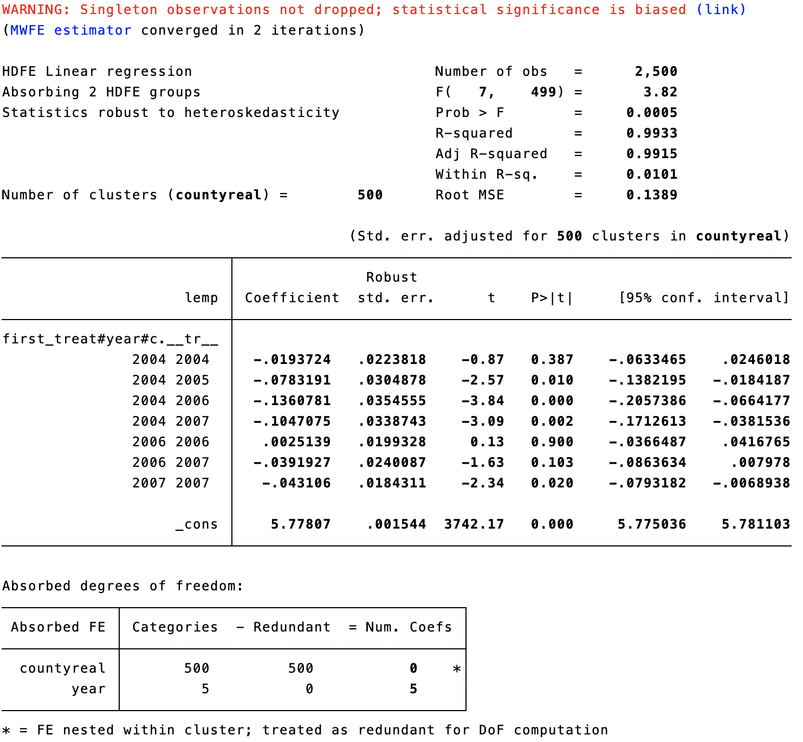
如果我们要看看按照时间、组群或者事件的加总结果，仅仅只需要输入下列stata命令：
* stata命令
estat simple
总之，Wooldridge(2021)的方法非常类似于插值法，但是，其更加的灵活、容易实施，而且比CS(2020)的DID估计量更有效率。实践中，我们要正确地声明我们的回归模型，如果模型具有高度的非线性性，这个方法可能仍然得不到无偏的ATT估计量。
连续型DID的偏误
连续型DID的偏误概述
上述DID内容都是二值型处理变量，即处理变量为虚拟变量情形下的DID设计。Brantly Callaway, Andrew Goodman-Bacon, Pedro H.C. Sant’Anna的一篇工作论文“Difference in Differences with a Continuous Treatment”的最新研究表明，在处理变量为多值变量或者连续变量时的DID设计中，即连续型DID设计中，传统估计量也可能存在“选择偏误”。那么，连续DID可能存在什么问题呢？在CGBS（2021）这篇工作论文中，作者们尝试回答：
（1）强度DID中，我们对什么参数感兴趣？
（2）为了识别这些参数，研究者需要做什么假设？
（3）双向固定效应（TWFE）回归适用吗？
（4）有没有其它更好的估计量？
在作者的文章中，“连续”可能更多是指的“足够连续”，即研究者可能在他们的模型中包含单一的自变量，而不是一系列虚拟变量。因此，除了真正的连续型吹变量，他们的结果也适用于“教育年限”这类处理变量，这类变量有许多离散值，而不是真正的连续处理变量。
两期的例子
首先从最简单的两期DID开始，在第一期，没有组群受到处理；在第二期有一些组群受到处理，且处理强度是连续变化的，例如，最低工资的调整额，此外，还有一些组群没有受到处理。